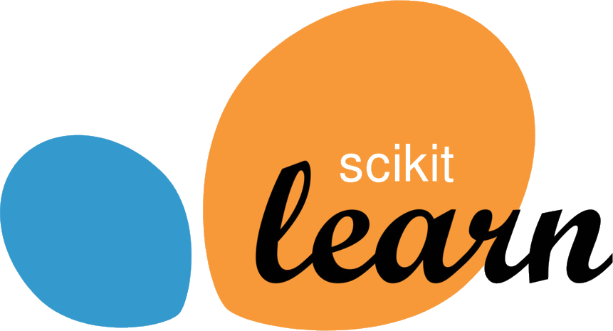
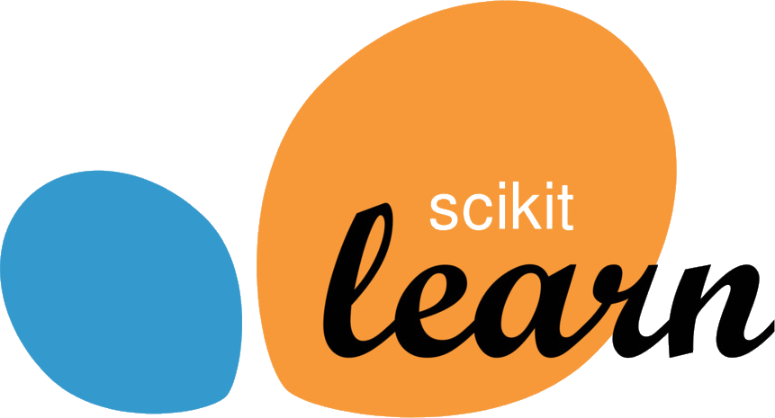
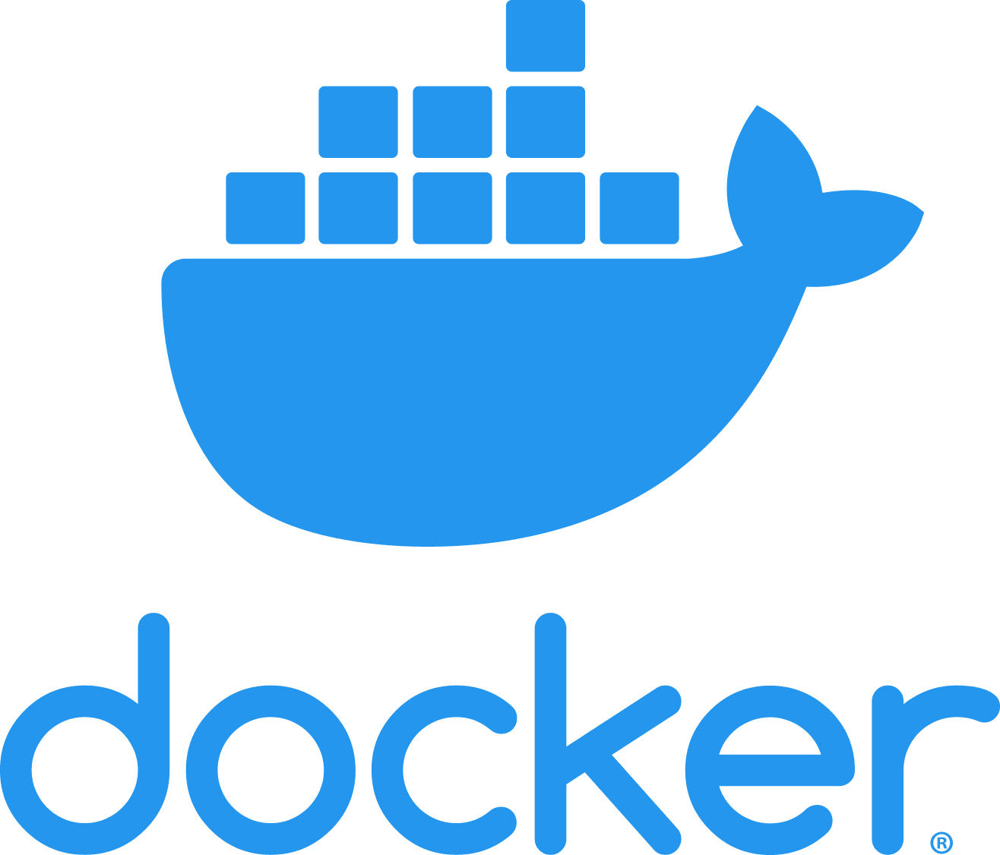
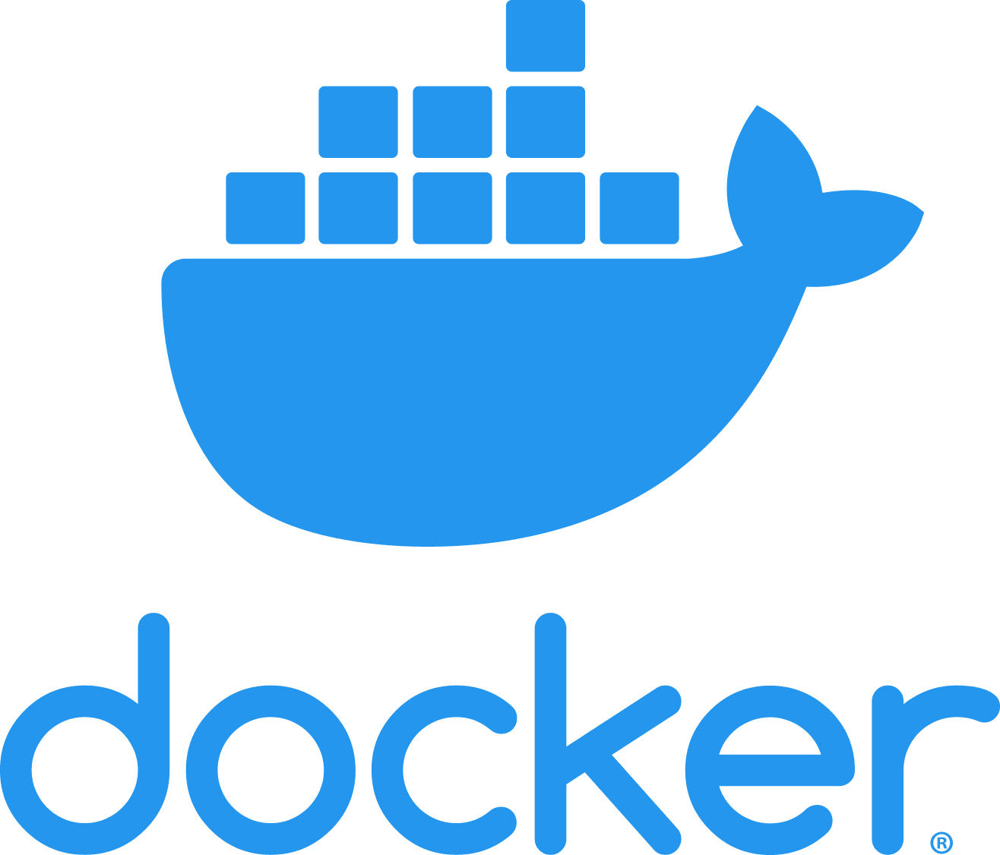
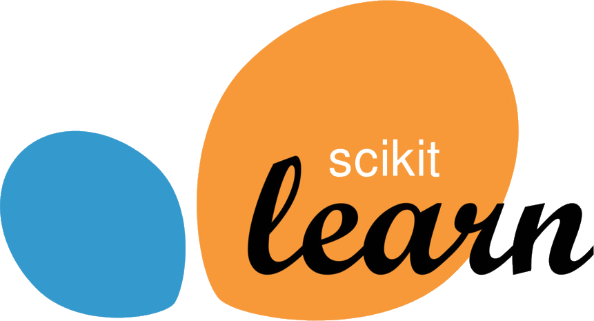
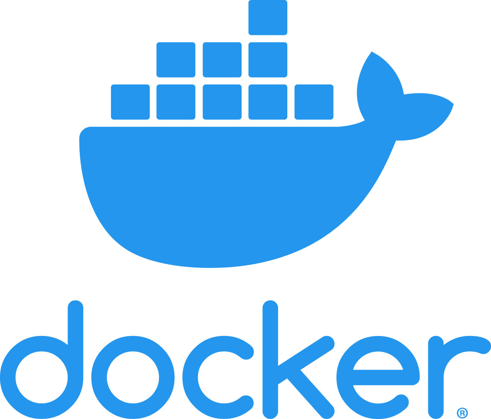

Skills


 


 

I completed my Ph.D. in Computational Chemistry, where I delved into the realm of AI-driven molecular simulations. My research not only expanded the horizons of scientific knowledge but also pioneered innovative methodologies, fusing the power of computational modeling with artificial intelligence. This interdisciplinary approach not only deepened my understanding of chemical phenomena but also honed my skills in data analysis, machine learning, and predictive modeling.


The challenge was immense - exploring chemical space effectively is akin to finding a needle in a cosmic haystack. Traditional methods often prove inefficient, especially when dealing with the mind-boggling number of potential molecular configurations. Armed with my expertise in Scikit-Learn and PyTorch, I set out to create algorithms that could not only sift through this vast expanse but do so iteratively, learning and evolving with each exploration.
I conceptualized, designed, and implemented innovative active learning strategies that harnessed the power of machine learning. Leveraging Scikit-Learn's robustness and PyTorch's flexibility, I crafted algorithms capable of intelligently selecting the most informative data points from the chemical space. By strategically choosing which molecular configurations to explore next, the algorithms significantly accelerated the discovery process.
The iterative nature of our approach was paramount. With each iteration, the algorithms learned from the previously explored data, adapting their exploration strategies dynamically. Through continuous refinement and optimization, the algorithms became adept at identifying promising regions within the vast chemical space, guiding our research efforts with unprecedented precision.
This endeavor was not a solitary pursuit. I collaborated closely with a team of talented researchers, exchanging insights and ideas to enhance the algorithms further. Together, we created a synergy where our collective expertise in chemistry, data science, and machine learning fueled the project's success. Our collaborative spirit ensured that the algorithms were not just technologically advanced but also deeply rooted in the nuances of real-world chemical phenomena.
The impact of our work was profound. By exponentially increasing the efficiency of our exploration efforts, we discovered novel molecular structures with remarkable properties. These discoveries held immense potential in various fields, from pharmaceuticals to materials science. Our achievements not only pushed the boundaries of what was deemed possible but also opened new avenues for future research and innovation.
Working on this project was not just a professional accomplishment; it was a testament to the boundless possibilities that emerge when computational chemistry meets the cutting-edge world of machine learning. I am immensely proud of the strides we made and the knowledge we generated, and I am eager to apply these experiences and skills to future endeavors, continuing to push the boundaries of scientific exploration.
LinkedIn: linkedin.com/in/alexander-van-teijlingen/
ORCiD: orcid.org/0000-0002-3739-8943/
GitHub: github.com/avanteijlingen